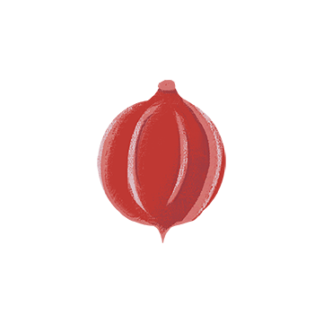
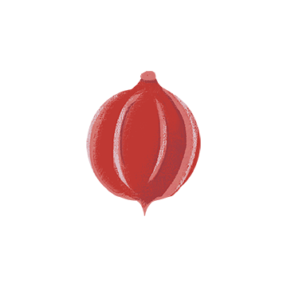

The Emperor’s Seed
Virtue - Honesty
Illustrated by Brittany Call
Adaption of Ancient Chinese
Tale by Julie Anderson

He called the young people
in the kingdom together and said,
"It is time for me to step down
and to choose the next emperor."
I am giving each one of you a seed today. I want you to plant the seed, water it and come back one year from today with what you have grown from this one seed.
I will then judge what you bring and choose who will be the next emperor.
Ling received a seed like the others. He went home and excitedly told his mother the story.
She helped him get a pot and planting soil, and he planted the seed and carefully watered it. Every day he watered it and watched to see if it had grown.
After about three weeks, some of the other youths began to talk about their seeds and the plants that were beginning to grow. Ling kept checking his seed, but nothing grew.
Three, four, five weeks went by, but nothing sprouted.
By now, others were talking about their plants. Ling didn't have a plant, and he felt like a failure.
Six months went by; still nothing grew in Ling's pot. He believed he had killed his seed. Everyone else had trees and tall plants, but he had nothing. He just kept hoping for his seed to grow.
After a year all the youths of the kingdom were ready to bring their plants to the emperor for his inspection.
Ling told his mother that he wasn't going to take an empty pot, but his Mother said he must be honest about what happened. Ling felt sick to his stomach, but he knew his Mother was right.
When Ling arrived, he was amazed at the variety of plants grown by the other youths. They were all shapes and sizes.
Ling put his empty pot on the floor and many of the others laughed at him. A few felt sorry for him and said, "Hey, nice try."
When the emperor arrived, he greeted the young people and then surveyed the room. Ling tried to hide in the back.
"My, what great plants, trees and flowers you have grown," said the emperor. "Today, one of you will be appointed the next emperor!"
All of a sudden, the emperor spotted Ling at the back of the room with his empty pot. He ordered his guards to bring him to the front.
Ling was terrified. "The emperor knows I'm a failure! Maybe he will have me killed!"
When Ling got to the front, the Emperor asked his name. "My name is Ling," he replied. The emperor looked at Ling, and then announced to the crowd,
"Behold your new emperor! His name is Ling!" Ling couldn't believe it. Ling couldn't even grow his seed. How could he be the new emperor?
 

Then the emperor said, "One year ago today, I gave everyone here a seed. I told you to take the seed, plant it, water it, and bring it back to me today. I gave you all boiled seeds, which would not grow.
All of you, except Ling, have brought me trees, plants and flowers. When you found that the seed would not grow, you substituted another seed for the one I gave you."
Ling was the only one with the courage and honesty to bring me a pot with my seed in it. Therefore, he is the one who will be the new emperor."
Plant honesty, you will reap trust. Plant goodness, you will reap friends. Plant humility, you will reap greatness. Plant perseverance, you will reap victory. Plant consideration, you will reap harmony. Plant hard work, you will reap success. Plant forgiveness, you will reap reconciliation. Plant openness, you will reap intimacy. Plant patience, you will reap improvements. Plant faith, you will reap miracles.
What you plant now will determine what you will reap tomorrow. The seeds you now scatter will make your life worse or better in the future. It may also have a profound effect on those around you. Yes, someday, you will enjoy the fruits..... or you will pay for the choices you plant today.